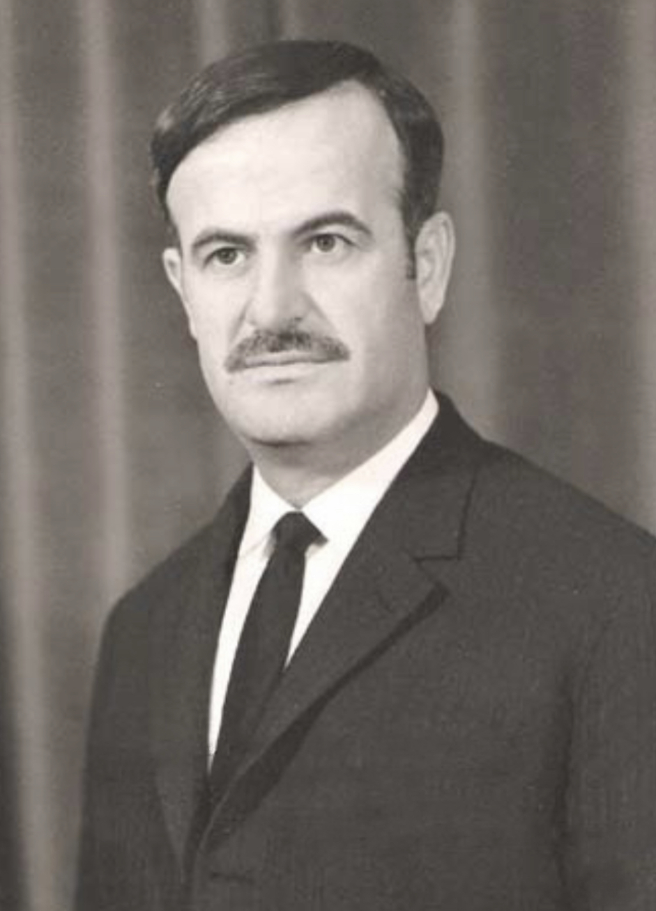
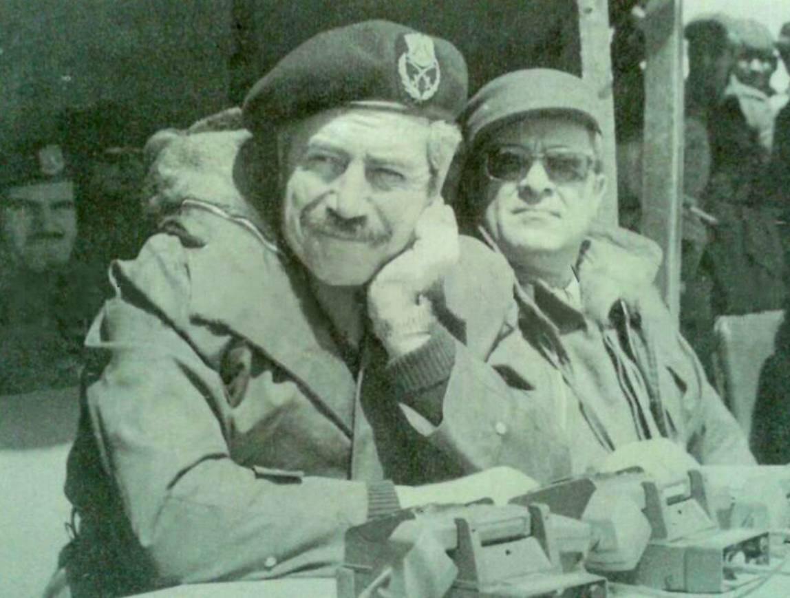
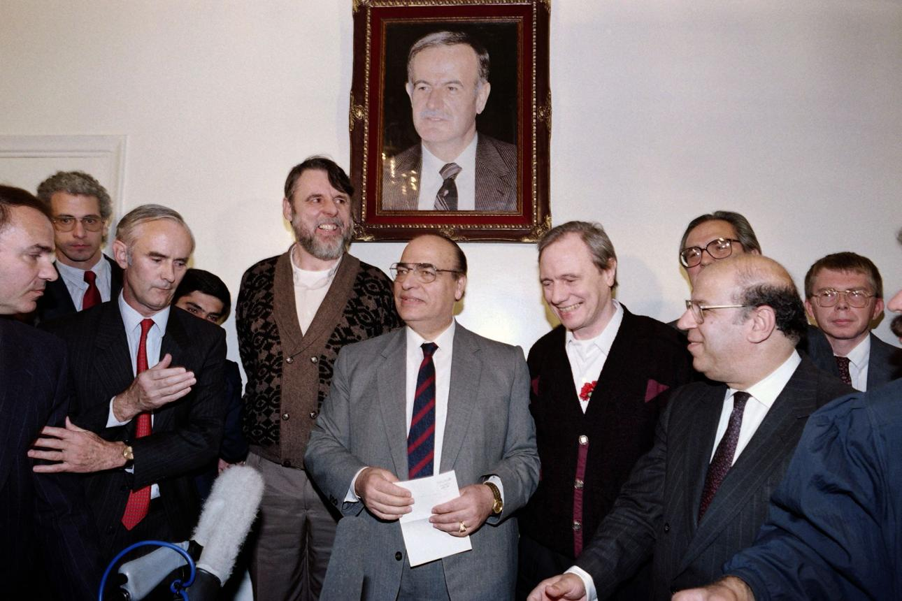
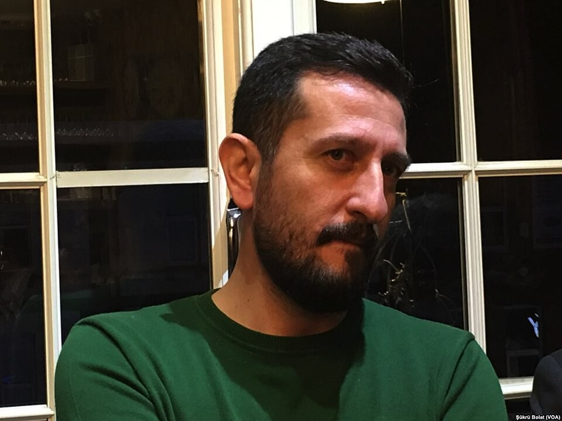
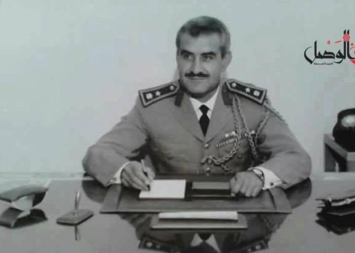
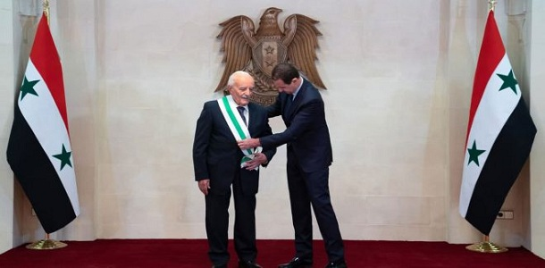
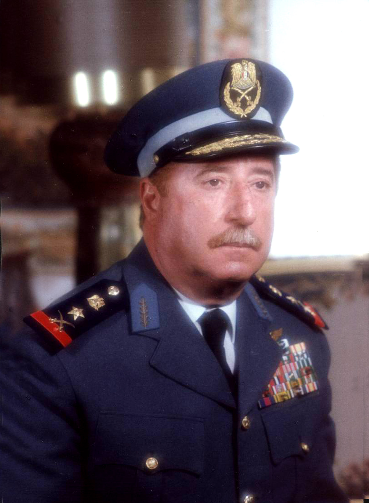
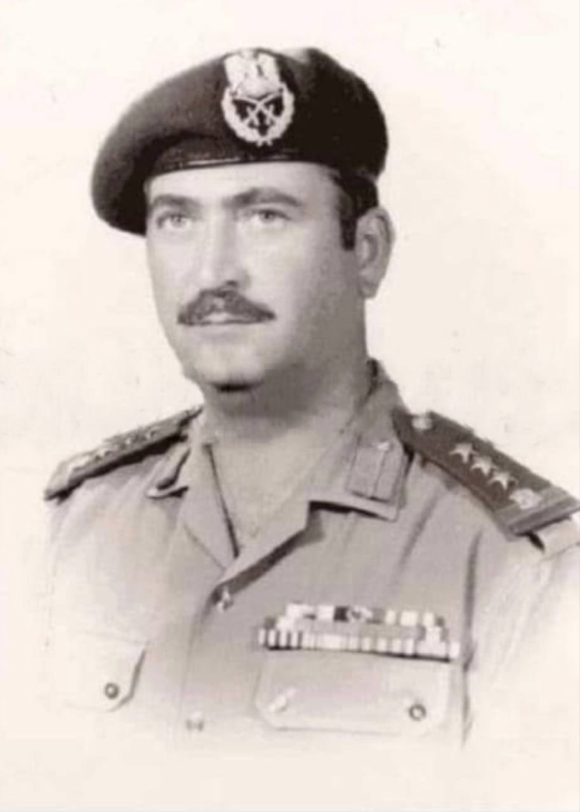
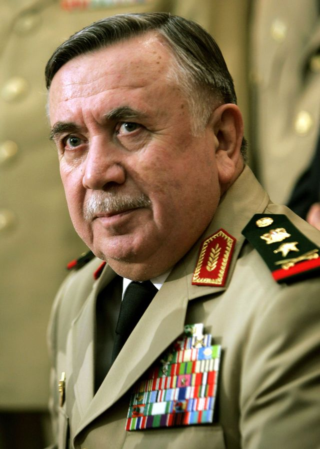
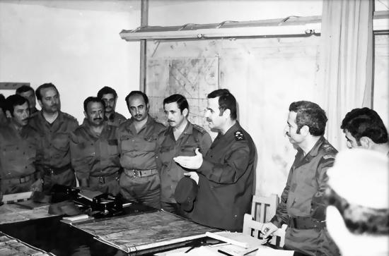

رئيس الجمهورية والقائد العام للقوات المسلحة
حافظ الأسد
كان رئيساً لسوريا والقائد العام للقوات المسلحة خلال حرب اكتوبر، وشارك في تنسيق قرار الحرب مع مصر.
السادس من أكتوبر ١٩٧٣
تعرف على بعض القادة الذين تولوا مسؤوليات سياسية وعسكرية خلال الحرب.
اكتشف القادةأدوار قيادية مختلفة اجتمعت في التخطيط والاستعداد وإدارة معركة العبور.

رئيس الجمهورية والقائد العام للقوات المسلحة
كان رئيساً لسوريا والقائد العام للقوات المسلحة خلال حرب اكتوبر، وشارك في تنسيق قرار الحرب مع مصر.

وزير الدفاع
تولى وزارة الدفاع السورية خلال الحرب، وأشرف ضمن القيادة العسكرية على شؤون القوات و الاستعدادات.

رئيس هيئة الأركان
تولى رئاسة هيئة الأركان العامة السورية خلال حرب اكتوبر ضمن القيادة المسؤولة عن إدارة العمليات العسكرية.

قائد القوات الخاصة السورية
تولى قيادة القوات الخاصة في الجيش السوري و أصبح من أبرز القادة العسكريين السوريين في العقود التالية.


قائد عسكري سوري
تولى مسؤليات عسكرية في الجيش السوري و أصبح رئيس هيئة الأركان العامة السورية في التسعينات.

قائد القوات الجوية والدفاع الجوي السوري
أشرف على القوات الجوية السورية خلال الحرب و كان من أبرز قادة القوات الجوية في فترة السبعينات.

قائد الفرقة السابعة الآلية
قاد قواته على الجبهة السورية و قُتل أثناء المعارك في أكتوبر 1973.


قائد الفرقة المدرعة الأولى
كان من قادة التشكيلات المدرعة بالجيش السوري.